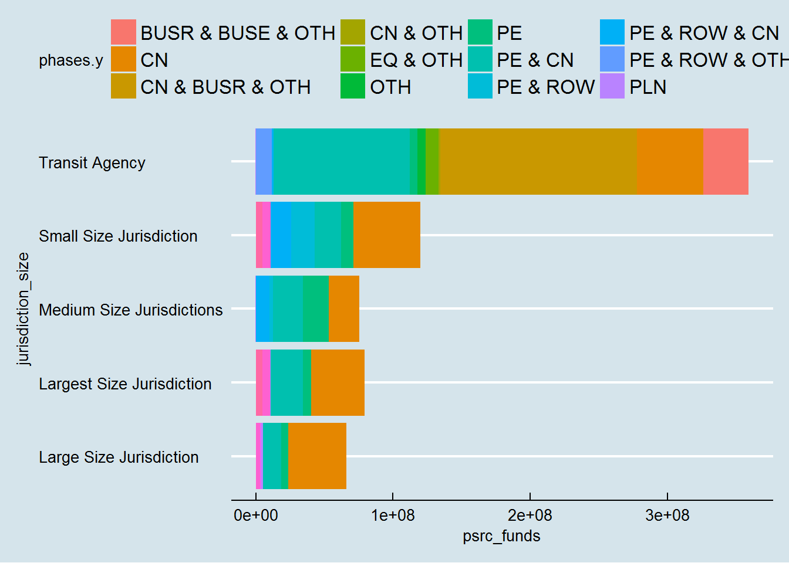

#load required packages
library(pacman)
pacman::p_load(scales,knitr,grid, gridExtra,ggthemes,gsheet,RCurl,dplyr, xlsx, RODBC, ggmap, foreign, maptools, rgdal, ggplot2, devtools, broom, sp, maps, mapdata, googlesheets)
#load data from google sheets
data <- data.frame(gsheet2tbl("https://docs.google.com/spreadsheets/d/1tVtrA8s1iv19OKXAmShSqQcT71zT7_DOk0ICsm8brrE/edit?usp=sharing"))
pop <- data.frame(gsheet2tbl("https://docs.google.com/spreadsheets/d/1xLc8rCkzZp5pqVh8LKzB9bsyeDNmnUXiZciAgvqOE88/edit?usp=sharing"))
#summarise data
data_sum<-data %>%
group_by(Sponsor, ID, Title, Total.Project.Cost) %>%
summarise(psrc_funds = sum(PSRC.Funds), phases=paste(Phase.s., collapse=" & "))
#join datasets
data_final<-left_join(pop, data_sum, by="ID") %>% select (X2010.Population, ID, phases.y, psrc_funds, Sponsor.y, Title.y)
#clean data
data_final<-data_final[complete.cases(data_final),]
data_final$X2010.Population<-gsub(",","",data_final$X2010.Population)
data_final$X2010.Population<-as.numeric(data_final$X2010.Population)
#manipulate data
data_final <- data_final %>% mutate (jurisdiction_size= ifelse(X2010.Population <50000, "Small Size Jurisdiction", ifelse(X2010.Population >= 50000 & X2010.Population < 100000, "Medium Size Jurisdictions",ifelse(X2010.Population >= 100000 & X2010.Population < 300000, "Large Size Jurisdiction", ifelse(X2010.Population >= 300000 , "Largest Size Jurisdiction", "Not Applicable")))))
#prepare data for display in table
data_final<-data_final[order(data_final$psrc_funds),]
data_final$jurisdiction_size[is.na(data_final$jurisdiction_size)] <- "Transit Agency"
data_graph<-data_final
data_graph<-data_graph %>% filter(phases.y %in% c("CN","CN & BUSR & OTH","OTH", "PE", "PE & CN", "PE & ROW", "PE & ROW & CN"))
data_final$psrc_funds<-dollar(data_final$psrc_funds)
colnames(data_final)<- c("Population", "ID","Phases", "Funding Award", "Jurisdiction", "Project Title", "Size")
data_final<-data_final %>% select(Population, `Funding Award`, Jurisdiction, `Project Title`, Size)
data_final$Population<-prettyNum(data_final$Population,big.mark=",",scientific=FALSE)
data_final$Population<- gsub("NA","Transit Agency", data_final$Population)
data_final<-data_final[c("Jurisdiction", "Project Title", "Funding Award", "Population", "Size")]
#show summary table
kable(data_final[1:10, ], caption = "Smallest Funding Amounts Per Project", row.names=FALSE, align='l')| Jurisdiction | Project Title | Funding Award | Population | Size |
|---|---|---|---|---|
| Edgewood | Meridian Ave - 24th St E to 36th St E | $29,496 | 9,387 | Small Size Jurisdiction |
| Kitsap Transit | Electric Vehicle Charging Systems | $40,000 | Transit Agency | Transit Agency |
| Kitsap County | Pedestrian Safety Improvements at Suquamish Way and Division Ave NE | $40,462 | 168,872 | Large Size Jurisdiction |
| Tacoma | Thea Foss Waterway- Site 10 Esplanade | $50,000 | 198,364 | Large Size Jurisdiction |
| Auburn | Lake Tapps Parkway ITS Expansion | $82,950 | 70,179 | Medium Size Jurisdictions |
| Sumner | No. 9 Ditch Trail (Sumner Trail System) | $93,500 | 9,451 | Small Size Jurisdiction |
| Arlington | Smokey Point Blvd Pavement Preservation (188th to SR-530) | $112,225 | 17,944 | Small Size Jurisdiction |
| Snohomish County | 164th Street SE Overlay | $114,000 | 18,229 | Small Size Jurisdiction |
| Puyallup | Non-Motorized Transportation Plan Project | $129,750 | 37,022 | Small Size Jurisdiction |
| Kitsap Transit | Bremerton Transportation Center Phase A/B/C/D | $141,489 | Transit Agency | Transit Agency |
ggplot(data_graph, aes(jurisdiction_size, psrc_funds, fill=phases.y)) +geom_bar(stat="identity") +theme_economist() +coord_flip() + theme( axis.title.y = element_blank(), legend.title = element_blank(), plot.background = element_rect(fill="#afccb7"),panel.background = element_rect(fill="#afccb7"), legend.background =element_rect(fill="#afccb7")) +ylab("Federal Funds Awarded") + scale_fill_manual(values=c("#067ca0", "#9e3838","#c17913","#258227","#653e7c","black","#8c8b7f")) +scale_y_continuous(labels=scales::dollar)